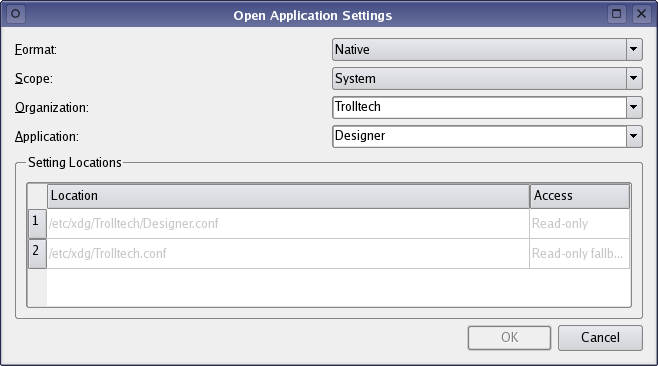

| Home · All Classes · Main Classes · Annotated · Grouped Classes · Functions |
Files:
The Settings Editor example shows how Qt's standard settings support is used in an application by providing an editor that enables the user to view the settings for installed applications, and modify those that can be edited.

| Copyright © 2005 Trolltech | Trademarks | Qt 4.0.0 |